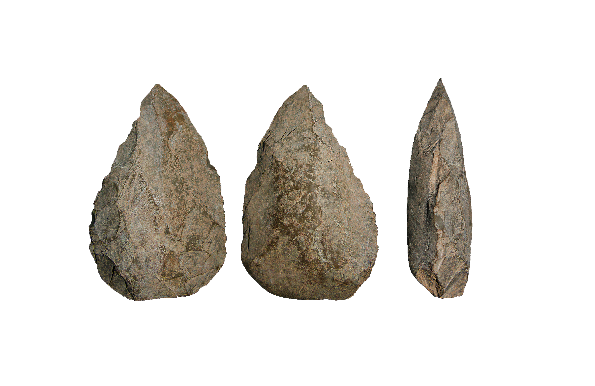

Les intervencions arqueològiques a la Cova del Bolomor corresponen a les campanyes d’excavació que des de l’any 1989 es realitzen de forma planificada durant 30 dies a l’any pel Servici de Investigació Prehistòrica de la Diputació de València, amb el corresponent permís de la Conselleria de Cultura de la Generalitat Valenciana. Els resums d’aquestes actuacions anuals, formen part de les memòries d’excavació corresponents i el material arqueològic es troba dipositat al Museu de Prehistòria de València.
